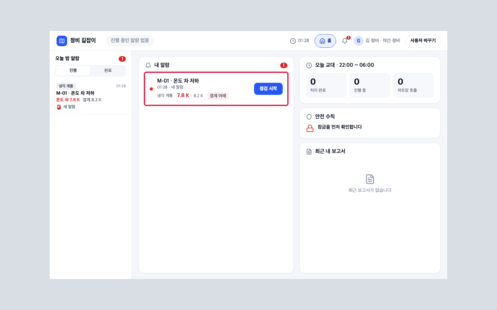
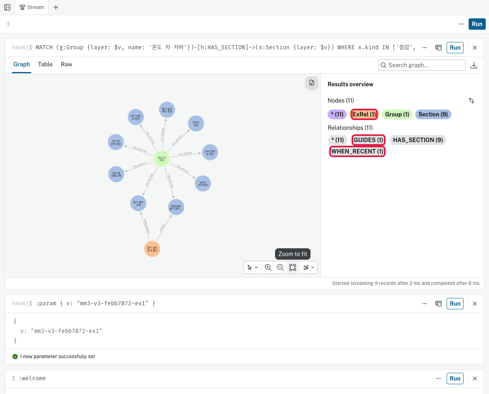

읽는 법 · 파란 칸 화면에 보이는 단추 · 글자(누름) · 노란 칸 직접 칠 글 · 검은 상자 터미널 명령(복사해 붙여 넣기) · 빨간 점선 상자 화면 그림(빨간 테 = 누를 곳) · 확인 필요 아직 정해지지 않은 값
1첫 상태 만들기 터미널 · AgentOps
할 일
문서 09 1번(모두 처음부터 다시) → 문서 04 1 ~ 8번
보일 것
kg-init 끝 줄 'KG_INIT ok AT=… FIRST_PACK_TAG=first …' · AgentOps 'V1 · 운영' · 정비자 홈 '진행 중인 알람 없음'
2설비 알람 터미널 · 정비자 앱
할 일
메인 시나리오 차례: M-01(지난 같은 조치 → 사람 확인 · 승인) → M-03(추천) → M-02(추천 없음)
M-03 · M-02는 M-01을 6번까지 끝낸 뒤 각 알람을 넣고 진단 화면을 봄(같은 명령에 이름만 바꿈)
scripts/app-alarm.sh M-01
보일 것
정비자 '내 알람'에 한 줄 · 뒤의 M-03 진단: 원인 1위 '냉각 필터 막힘 100% · 6건 중 6건' · 다음 점검 4.3 / M-02 진단: '50% · 8건 중 4건' · 이유에 '예외 조건 안 맞음 · 최근 4일 같은 정비(4.3.2) 없음 · M-01에서 배운 규칙'(배운 예외가 이번엔 맞지 않아 추천하지 않음)

알람 도착 · 빨간 테: 알람 카드
3정비자 점검 · 조치 · 보고서 정비자 앱
할 일
문서 05 3번처럼 알람 카드 점검 시작 → 진단 보기 → 점검 시작 → → 잠금 완료 → 사전 확인 확인까지 — M-01은 첫 점검이 '흡기 필터 육안 점검'
이 시나리오는 예외로 조치 — 첫 점검 안내('흡기 필터 육안 점검') 아래 점검 바꾸기 → 창에서 예외 → 바로 조치(호출 후 조치는 상급자 승인을 먼저 받는 다른 길)
조치 화면 '조치 · 예외 조치' → 조치 완료 → 재가동 확인 항목을 모두 체크 → 재가동 → 경계 이내
'예외 상황 기록' 창: 예외 글 칸에 한두 줄(예 점검한 곳 · 한 조치) → AI 나눔 → 보고서에 적용
보고서 초안의 '예외 상황' 칸 확인 → 보고서 확정 → 확인 창 확정
보일 것
'보고서를 확정했습니다' · 상급자 승인 대기에 'M-01 온도 차 저하 예외상황 · 예외 조치' 한 줄 · '호출 없이 조치함 1건'
4상급자 승인 상급자 앱
할 일
문서 05의 5번
보일 것
승인 됨
5지식 그래프 반영 보기 Neo4j 화면
할 일
Neo4j 화면(문서 03 3번과 같이 연결) → 쿼리 1로 바뀐 층 이름을 찾음 → 맨 위 줄의 '뒤' 값을 둘째 줄의 따옴표 안에 넣어 실행 → 쿼리 2 실행 → 결과 위 Graph 탭
MATCH (a:Layer)-[:PREVIOUS]->(b:Layer)
RETURN a.layer AS 뒤, b.layer AS 앞, a.swapped_at AS 바뀐_때
ORDER BY a.swapped_at DESC
:param { v: "<쿼리 1 맨 위 줄의 뒤 값>" }
MATCH (g:Group {layer: $v, name: '온도 차 저하'})-[h:HAS_SECTION]->(x:Section {layer: $v})
WHERE x.kind IN ['점검', '조치', '예외']
OPTIONAL MATCH (e:ExRel {layer: $v})-[r]->(x)
RETURN g, h, x, e, r
보일 것
쿼리 1 맨 위 줄 '뒤 · 앞'(승인 전 층 → 승인 뒤 새 층 · 뒤 이름 끝에 -ex1) · 쿼리 2 Results overview에 ExRel 1 · Group 1 · Section 9와 관계 GUIDES 1 · HAS_SECTION 9(첫 예외 · 바로 조치 길)

Neo4j 표 · 그래프 · 빨간 테: 새 관계
6AgentOps 새 버전 보기 AgentOps
할 일
위 탭 줄의 그래프 반영 새 버전 → 띠 · 오른쪽 그래프 버전 표
보일 것
새 버전 '운영 중' · '새 예외 → 관문 통과 → 새 그래프 g1' · 그래프 버전 ○추출 ○간섭 ○유지 · 배포 기록 네 줄